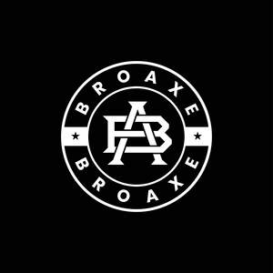

Trade Mark Journal No.2025/025 20 June 2025
UK00004216398 9 June 2025 (25)

- Class 25
- Tracksuit bottoms; Tracksuit tops; Tracksuits; Pyjamas; Nappy pants [clothing]; Sweatpants; Leggings [trousers]; Jogging bottoms [clothing]; Open-necked shirts; Jogging pants; Shoes for leisurewear; Trousers; Hooded sweat shirts; Sweatsuits; Trousers shorts; Short-sleeved shirts; Trousers for sweating; Hooded sweatshirts; Turtleneck shirts; Long-sleeved shirts; Gym shorts; Corduroy trousers; Boy shorts [underwear]; Men's underwear; Short-sleeved T-shirts; Lounge pants; Sweat-absorbent underwear; Hooded pullovers; Trousers of leather; Men's dress socks; Underpants; Warm-up pants; Sweat-absorbent underclothing [underwear]; Jogging outfits; Jogging bottoms; Sleeveless jackets; Corduroy shirts; Snowboard trousers; Rugby shirts; Sleeveless jerseys; Corduroy pants; Shorts [clothing]; Men's and women's jackets, coats, trousers, vests; Chino pants; Underwear; Sweatshorts; Casual trousers; Ski trousers; Sportswear; Camouflage pants; Gymwear; Knitted underwear; Sport shirts; Trouser socks; Woollen tights; Jogging suits; Dress pants; Sneakers; Leisurewear; Rugby shorts; Gym suits; Turtleneck pullovers; Collared shirts; Shirts for suits; Pajama bottoms; Pants; Bottoms [clothing]; Gym boots; Sleeved jackets; Sports pants; Dress shirts; Mock turtleneck shirts; Bib tights; Hooded tops; Sleeveless pullovers; Blue jeans; Bib shorts; Golf trousers; Denim pants; Capri pants; Tennis shirts; Jogging shoes; Camouflage shirts; Fleece shorts; Hoodies; Waterproof trousers; Jogging tops; Jumper suits; Boxer shorts; Sweatshirts; Babies' pants [underwear]; Jerseys [clothing]; Leotards; Oilskins [clothing]; Cagoules; Short-sleeve shirts; Rugby shoes; Soccer shirts; Blouson jackets; Boxing shorts; Sweat-absorbent socks; Football shirts; Woollen socks; Sweat pants; Salopettes; Clothes for sport; Windcheaters; Warm-up jackets; Jogging sets [clothing]; Turtleneck tops; Tank-tops; Shirts; Suede jackets; Jackets being sports clothing; Jackets [clothing]; Vest tops; Denims [clothing]; Hooded bathrobes; Sweat shirts; Tennis shorts; Cycling pants; Moisture-wicking sports pants; Jockstraps [underwear]; Jeans; Tennis pullovers; American football pants; Denim jackets; Rugby tops; Padded jackets; Underwear (Anti-sweat -); Anti-sweat underwear; Men's socks; Baselayer bottoms; Plimsolls; Bootees (woollen baby shoes); Men's clothing; Ski pants; Casual shirts; Riding trousers; Quilted jackets [clothing]; Caps; Caps with visors; Caps [headwear]; Skull caps; Baseball caps; Swimming caps [bathing caps]; Cycling caps; Sports caps and hats; Bucket caps; Sports caps; Ladies wear; Swim wear for gentlemen and ladies; Underclothing for women; Underwear for women; Clothing for men, women and children; Footwear for men and women; Garments for protecting clothing; Footwear for women; Bathing costumes for women; Undergarments; Kerchiefs [clothing]; Footwear for men; Sleeping garments; Linen (Body -) [garments]; Body linen [garments]; Sports garments; Gabardines [clothing]; Ready-to-wear clothing; Coats for women; Knitwear [clothing]; Veils [clothing]; Religious garments; Socks for men; Silk clothing; Clothing; Knitted clothing; Teddies [undergarments]; Corsets [foundation clothing]; Corsets being foundation clothing; Bandeaux [clothing]; Fabric belts [clothing]; Clothes; Down garments; Dresses; Gussets for underwear [parts of clothing]; Woolen clothing; Embroidered clothing; Clothing for babies; Headbands for clothing; Coats for men; Linen clothing; Parts of clothing, footwear and headgear; Foundation garments; Jackets (Stuff -) [clothing]; Stuff jackets [clothing]; Bathing suits for men; Clothing for leisure wear; Furs [clothing]; Party hats [clothing]; Under garments; Gloves [clothing]; Gloves as clothing; Cowls [clothing]; Bodies [clothing]; Tops [clothing]; Clothing for children; Dresses for evening wear; Foulards [clothing articles]; Dance clothing; Hoods [clothing].
MSK GARMENTS LIMITED